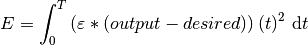

Spike Loss¶
-
class
spikeLoss.spikeLoss(networkDescriptor)[source]¶ This class defines different spike based loss modules that can be used to optimize the SNN.
Usage:
>>> error = spikeLoss.spikeLoss(networkDescriptor) >>> error = spikeLoss.spikeLoss(errorDescriptor, neuronDesc, simulationDesc)
-
numSpikes(spikeOut, desiredClass, numSpikesScale=1)[source]¶ Calculates spike loss based on number of spikes within a target region. The target region and desired spike count is specified in
error.errorDescriptor['tgtSpikeRegion']Any spikes outside the target region are penalized witherror.spikeTimeloss..
- Arguments:
spikeOut(torch.tensor): spike tensordesiredClass(torch.tensor): one-hot encoded desired class tensor. Time dimension should be 1 and rest of the tensor dimensions should be same asspikeOut.
Usage:
>>> loss = error.numSpikes(spikeOut, target)
-
spikeTime(spikeOut, spikeDesired)[source]¶ Calculates spike loss based on spike time. The loss is similar to van Rossum distance between output and desired spike train.

- Arguments:
spikeOut(torch.tensor): spike tensorspikeDesired(torch.tensor): desired spike tensor
Usage:
>>> loss = error.spikeTime(spikeOut, spikeDes)
-